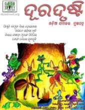
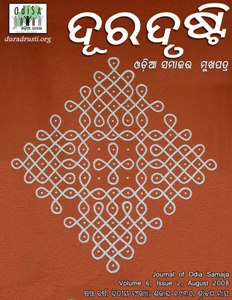
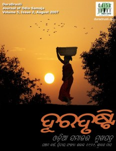
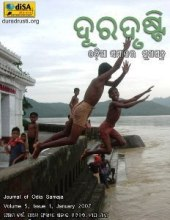
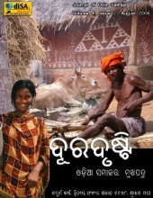
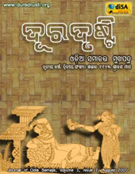
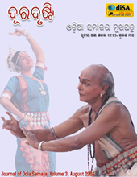
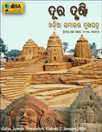
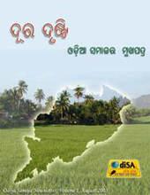

Volume 7, Issue 1
April 2009

Volume 6, Issue 2
August 2008

Volume 5, Issue 2
August 2007

Volume 5, Issue 1
January 2007

Volume 4, Issue 2
August 2006
Volume 4, Issue 1
January 2006

Volume 3, Issue 2
August 2005

Volume 3, Issue 1
January 2005

Volume 3
August 2004

Volume 2
January 2004

Volume 1
August 2003